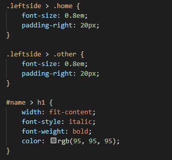
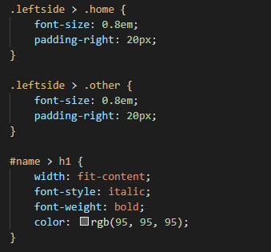

Best practices associated with using classes vs. ids

What is a selector and why is it important?
A Selector is a bridge between HTML elements and CSS. It allows CSS to manipulate the way HTML content is presented to the user on a web page. To understand how this works, you first need to know how a web page is built. Below we will look at the three components needed to make a functional web page: Content, Styling and Functionality.
Content is written up on a text editor using something called HyperText Markup Language (HTML). HTML has elements that allow you to create and structure the content of your website.
Once our web page has content and structure. Next thing to do is to make our web page pretty by styling it. This is when we would use the Cascading Style Sheet (CSS). This is how we change how the content that was written in HTML is presented to users via browser.
With just those two components, you can have a working web page but to make our website even more interesting and functional (putting the bells and whistles on). JavaScript is the tool that you need, whether you need to log what the user is doing on the website or to simply add some cool animations.
Separately they are three different things that do their job very very well but not very good at doing anything else. You can almost think of them as a team that's working on a project (your web page). So for them to accurately communicate between each other, you need the help of a selector. In CSS, you can assign and control the style of HTML components on a web page using a number of selectors.
There are 5 main types of selectors:
- CSS Universal Selector.
- Element Selector.
- Id Selector.
- Class Selector.
- CSS Attribute Selector.
Today we will be talking about Class Selector vs ID Selector.
What are the differnces?
The difference between an ID and a Class is that an ID is only used to identify one single component in our HTML. IDs are only used when one element on the page should have a particular style applied to it. However, a class can be used to identify more than one HTML component.
What are classes and ID selector when it comes to CSS?
In CSS, you can assign and control the style of HTML component on a web page using a number of selectors. ID and class are two of the mostly used CSS selectors that not only help with building the layout of the HTML document but they also help with styling it.
Let’s first start with how ID and class selectors are used and then we will continue with when to use each of them.
How to use ID and class selector?
To use an ID selector on CSS, you simply put ‘ # ’ (hashtag) in front of your element ID.
To use a class selector on CSS, you would instead use a ‘ . ’ (full stop/dot) in front of the element Class.
 

When to use them?
One trick I would use to determine which selector to use is asking myself "Will I need to use this css setting for something else?" If the answer is yes. You will probably need a class selector rather than an ID. Here are somethings you should try and remember when choosing which selector to use.
- If more than one elements on the page will need the same styling, use Class.
- If only one element will use the styling then its best to use an ID selector
- Use names that defines the function of the HTML the class or id encompass, not just the appearance.
For example: "navigation bar" vs "royal blue." - Try not to use classes and IDs to replicate HTML elements like h1, h2 and p.
- Rather than overuse classes, try to use div to improve performance.